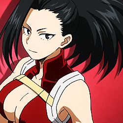
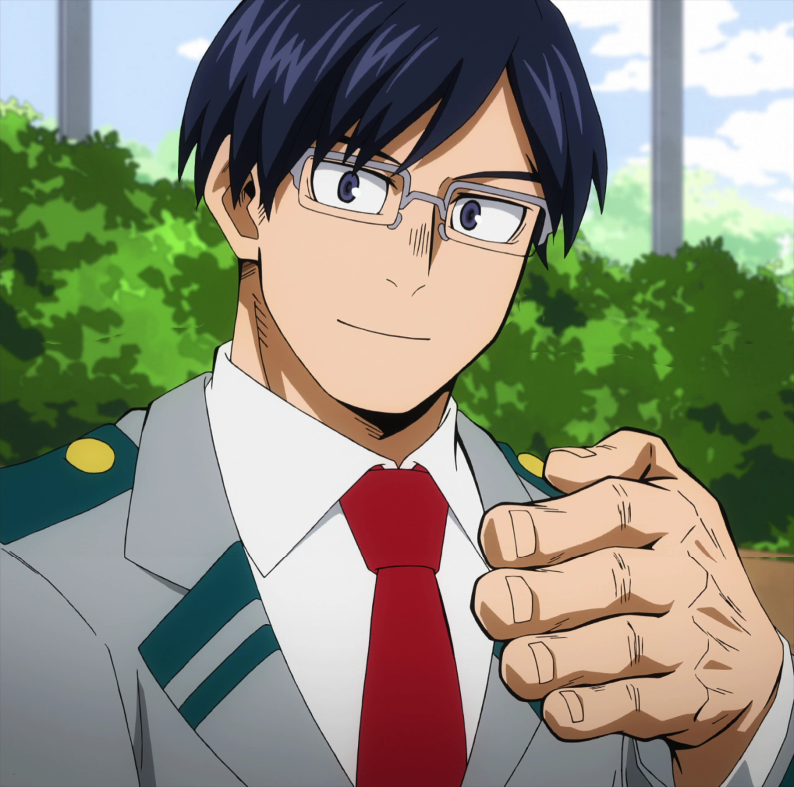
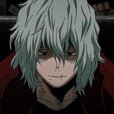
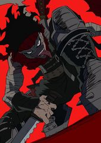

Boku No Hero
Bienvenidos a U.A.
.webp)
Izuku Midorilla "Deku"
Protagonista
Cuando era niño, Izuku admiraba mucho a los héroes y deseaba ser un héroe como su ídolo All Might, una vez que obtuviera su Don. Cuando los niños de su edad manifestaron sus particularidades, Izuku todavía no mostraba signos de desarrollar habilidades especiales. Debido a eso, su madre lo llevó a un médico quien asumió el hecho de que tiene dos articulaciones en su dedo meñique, por lo que nunca tendría un Don. Aun así, Midoriya siguió apuntando a ser un héroe y entrar a la Academia U.A.. Eso lo llevó a ser constantemente intimidado y ridiculizado por su amigo de la infancia, Katsuki Bakugo, y sus compañeros de clase, quienes creían que era imposible para alguien sin Don .Sin embargo, una reunión específica cambiaría la vida de Deku. Inesperadamente, el joven se ve involucrado en una batalla contra un villano para salvar a su amigo de la infancia. En medio de esta situación, el poderoso héroe All-Might ve en él el verdadero corazón de un héroe y decide recompensar al niño compartiendo sus propios poderes con él. Después de un entrenamiento largo y duro, Deku recibe los poderes. La intención de All-Might es que Deku se convierta en su sucesor como héroe y representante de la paz. Y para prepararse para la misión, el joven va a la escuela de héroes en formación.

katsuki Bakugo
El Explociones
Katsuki siempre admiró a All Might cuando era joven porque el héroe número uno siempre ganaría contra las probabilidades. Mientras mira un video de él en la tienda de electrónica, Katsuki le dice a sus amigos que All Might es el mayor héroe debido a su habilidad para lograr la victoria. Algún tiempo después, Katsuki derrotó a unos cuantos alumnos de cuarto grado que se toparon con él. Con Izuku mirando a lo lejos, Katsuki dice que el héroe más sorprendente siempre gana sin importar qué. Una vez que Katsuki desarrolló su Don Explosión, sus tendencias agresivas se transformaron en hostigamiento atroz. Él fue constantemente elogiado por su poderoso Don y desarrolló un complejo de superioridad retorcido como un niño pequeño. Creyendo ser mejor que todos los demás, Katsuki miró hacia abajo en Izuku especialmente porque carecía de un Don.


Shoto Todoroki
El Emo Evangelizado
Shoto fue concebido por medio de un matrimonio arreglado de Dones, el cuál se basa en el método de la eugenesia y que consiste en llevar a cabo un matrimonio con Dones fuertes con la finalidad de que el hijo nazca ya sea con una fusión de los Dones de sus progenitores o directamente con una evolución más fuerte de estos. Shoto fue el último hijo del matrimonio entre Enji Todoroki y Rei, debido a que había nacido con la combinación perfecta de singularidades en base a la vista de su padre Endeavor. Apenas Shoto cumplió cinco años, fue forzado por su padre a someterse a un duro entrenamiento con él para poder moldear tempranamente su Don y así a futuro superase a All Might. Enji también impidió que Shoto interactuara con sus hermanos, quienes no tenían que entrenar y podían jugar. Shoto pronto comenzó a despreciar su formación y resentía a Endeavor por abusar de él y de su madre.
All Might
¡Number one hero!
.jpg)
All Might nació sin don cuando en el mundo donde el mal corría desenfrenado debido a la influencia de All for One. Las tasas de criminalidad estaban aumentando porque los ciudadanos no tenían ningún héroe en el que creer. Durante su adolescencia, conoció a Nana Shimura, que era como una figura maternal para él. Le dijo a Nana que quería crear un mundo donde todos pudieran sonreír y vivir felices juntos. Para que eso suceda, el mundo necesitaba un «Símbolo de la paz» para inspirar una nueva era de armonía. Él creía que podía convertirse en alguien inspirador para las personas.Ella le pasó el One for All, convirtiéndose en el octavo usuario del don. Cuando asistió a la Academia U.A., Gran Torino, amigo de Nana, se convirtió en su maestro. El físico de All Might era lo suficientemente fuerte para entrenar con el poder al 100%, por lo que Gran Torino se centró principalmente en enseñarle cómo pelear adecuadamente, aunque sus métodos de entrenamiento eran tan duros que accidentalmente le infundió un miedo innato.
Mirio Togata
Monito Del Fall Out Mamado

Cuando era un niño pequeño, Mirio cayó accidentalmente en un río pero fue salvado por un Héroe Profesional. Este evento marcó su decisión de convertirse también en un héroe para salvar a otros. Aunque su padre consideró que debido a su Don, sería un objetivo difícil de lograr, Mirio no se desanimó y pasó el resto de sus años entrenando para mejorar el control de su Don y cumplir su sueño. Durante el tercer grado conoció a Tamaki Amajiki, un nuevo estudiante transferido que no pudo presentarse adecuadamente debido a su incomodidad social y como resultado no pudo hacer amigos. Mirio se le acercó después de darse cuenta de que Tamaki estaba tratando de decir que le gustan los Héroes; Fue este reconocimiento el que inició la amistad entre Tamaki y Mirio.
leguion Anime
Siguenos para saber todo acerca de tus animes y mangas favoritos
Tags
Manga Deku Tokio Anime U.A. Heroes Accion Ficcion Villanos Peleas Estudiantes Dones Poderes Shonen
Otro Personajes




Follow Me
Subscribe
Enter your e-mail below and get notified on the latest blog posts.